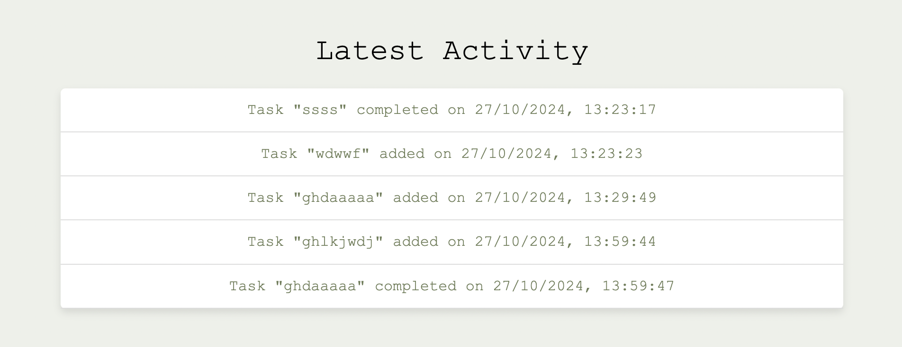

Github link and version control
Find here the Github link:
These are some of the commits during the development process

Coding decisions
Testing strategy
Github link and version control
Challenges faced
Inspiration links - Sources
This project is a Task Management Application that allows users to create, edit, delete, and filter tasks on a simple interface. The effortly team used JavaScript for all dynamic functionality and avoided inline onclick attributes to keep the HTML file clean. Also, both all the css and the javascript code is organized in a css and in a javascript file. This approach improves readability, maintainability, and scalability. Of course, during the development proccess the effortly team did a research to get inspiration and learn new things. Some of the inspiration links can be found in the the section Inspiration links - Sources
One of the testing methods our team used is erasing some lines of code in order to check for code that is useless (duplicate). Moreover, the effortly team snatched the webpage to check if it is responsive. Of course the webpage was checked across different browsers. See some of the examples:
Scenarios such as adding tasks without complete information and editing tasks were tested to confirm smooth functionality.
For example, one of the things we had to test was the relationship between the add new task form and the latest activity. We tested each feature (task addition, editing, deletion, and filtering) individually to ensure functionality and user interface elements behaved as expected.

Overall, this project was very fun to develop. The challenges we faced inspired us to become better and to learn more about web developing. One of the biggest challenges was to add the javascript and jquery code. We started the development of our webpage before the javascript/ jquery lectures, so we had to re-do some parts of the code. This process was tricky for us because we had to avoid having blocks with the same code.